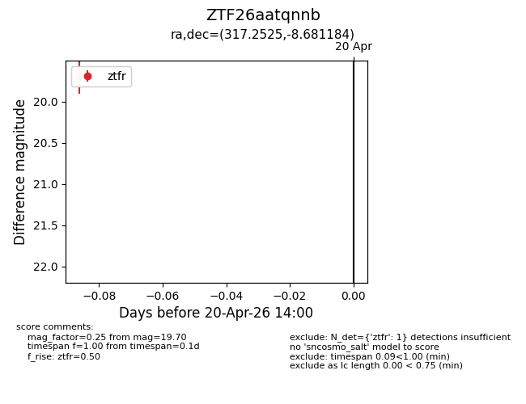
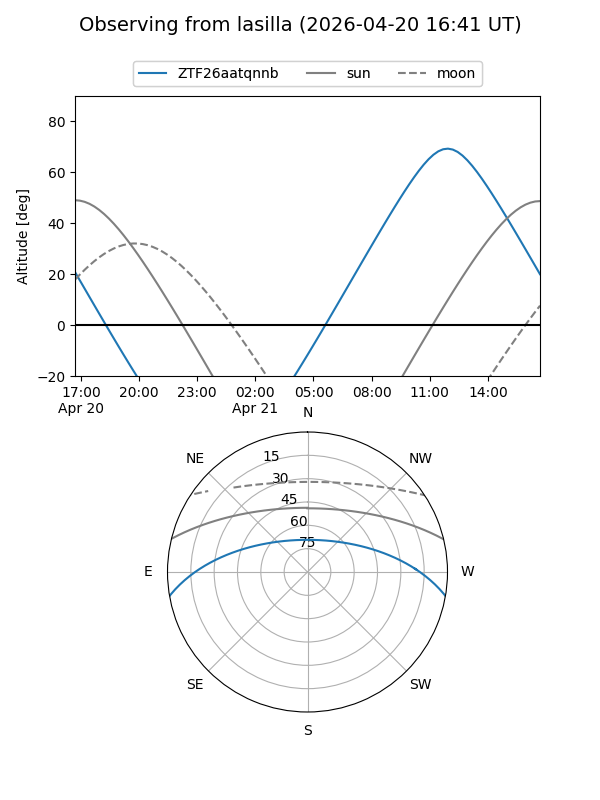
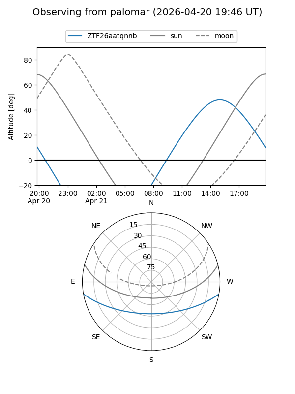

ZTF26aatqnnb
Target ZTF26aatqnnb at 2026-04-20 14:11
Aliases and brokers:
FINK: link
Lasair: link
ALeRCE: link
alt names
ZTF26aatqnnb (ztf,fink_ztf)
Coordinates:
equatorial (ra, dec) = 317.2525,-8.68118
equatorial (HMS+DMS) = 21:09:00.61,-08:40:52.26
galactic (l, b) = (41.3204,-34.45717)
Flags:
Photometry:
last ztfr=19.70
1 ztfr detections
Lightcurve

Visibility


Additional plots